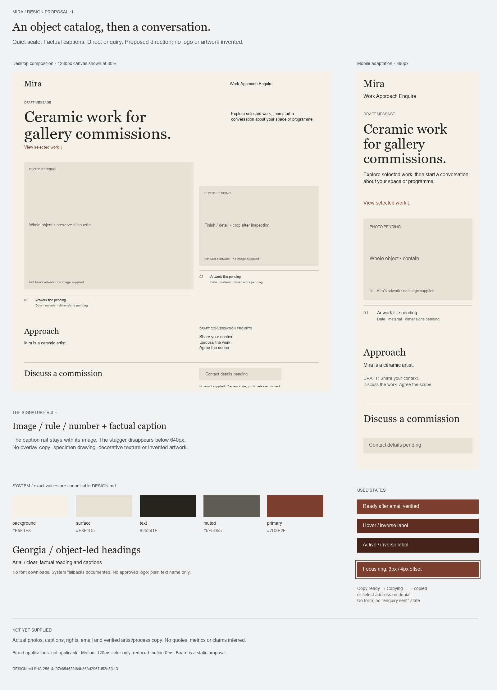

<!doctype html><html lang="en"><meta charset="utf-8"><meta name="viewport" content="width=device-width,initial-scale=1"><title>Mira — visual-system board r1</title><style>body{margin:0;background:#f1f2f3;color:#25241f;font:16px Arial,Helvetica,sans-serif}nav,footer{padding:20px;max-width:1560px;margin:auto}nav a{margin-right:24px}img{display:block;width:100%;max-width:1600px;height:auto;margin:auto}a{color:#253c71}p{max-width:80ch;line-height:1.5}</style><nav aria-label="Design package"><a href="WEBSITE.md">Brief and journeys</a><a href="WEBSITE.md#page-brief--p1-">Page brief</a><a href="DESIGN.md">Canonical DESIGN.md</a><a href="REVIEW.md">Review</a></nav><main></main><footer><p>Static visual-system artifact, not the website. System colors and type roles generated from DESIGN.md front matter. No source photos or approved logo were available. Proposed copy and contact dependencies remain visible. Third/context work view is omitted from this sample because no asset exists; its exact layout is specified in DESIGN.md.</p><p>DESIGN.md SHA-256: <code>4a97c85463fd84b363d2967d52e5f413a6cf69d7245fbf885f93a14812db24eb</code></p></footer></html>